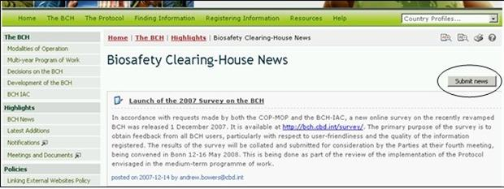
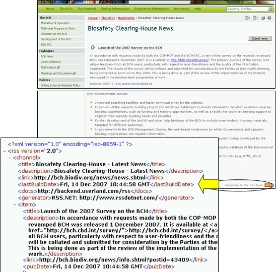

Noticias del CIISB lleva a los usuarios a la sección de noticias de última hora
Proporciona información actualizada sobre los cambios realizados al Portal Central CIISB. Desde esta página, los usuarios registrados pueden suministrar noticias relacionadas al CIISB usando el botón Enviar noticia .

Figure 16
En la parte inferior derecha de la página de Noticias CIISB se encuentra un botón Suscríbase a Alimentador Rss[1] Rss que lleva al usuario acceder a los artículos de noticias de la página RSS. La página describe brevemente la función de los Rss, proporciona un enlace a Aprender más sobre los Rss y un enlace a suscríbase a este Rss.

Figure 17
[1]Really Simple Syndication (RSS) es un formato sencillo de datos que es utilizado para redifundir contenidos a suscriptores de un sitio web. Es útil para publicar artículos simultáneamente en diferentes medios a través de la fuente a la que pertenece.